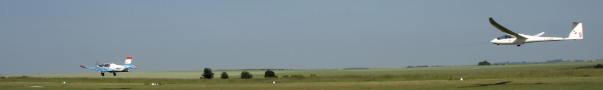
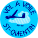
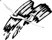
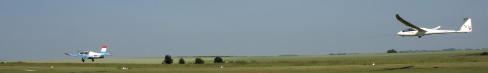
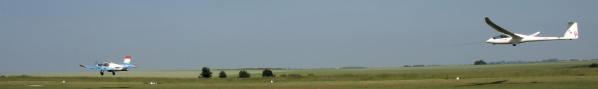
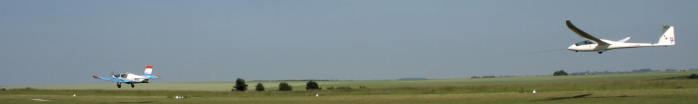
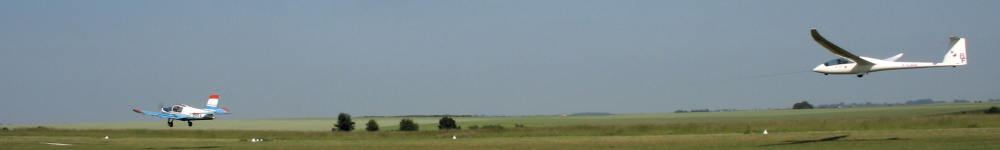

Accueil
Nos planeurs
L'aérodrome
Comment devenir pilote
Nos Tarifs
Nous contacter
Photos
Nos liens
Quelques sites à visiter :
Fédération Française de Vol à Voile
Toute l'actualité vol à voile !
Discussions et aides entre vélivoles
Compétition amicale regroupant plus de 2200 vélivoles
 Site informations pour les membres de l'ASVRD
 Le site de nos amis Allemands de Kaiserslautern
La chronique du jumelage de l'ASVRD avec l'aéroclub de Kaiserslautern
Site officiel de la ville de Saint Quentin
 


